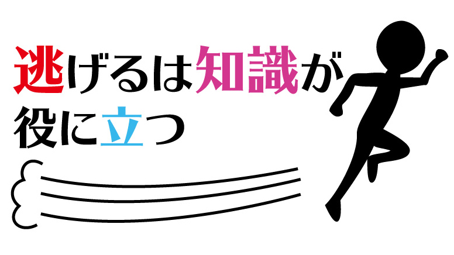

地震の時はどう逃げる？
地震の場合、どんなところに避難すれば良いでしょうか。
頑丈な建物や広い公園の中で避難所に設定されている場所もあります。
その場合はそこに避難すると安全であり、また食料や飲み水に困りづらいと思われます。
また、大勢の人がいて安心できるのではないかと考えます。
家族で話し合っている避難所があるならそこに、なければ一番近いところに避難するのが
安全であると考えられます。

※地名は隠してあります。
今回の場合、家から一番近い避難場所は中学校です。
実際に家から歩いてみましたが道中に危険箇所もなさそうでしたので、
中学校に避難するのが最も良いでしょう。
>>トップページ